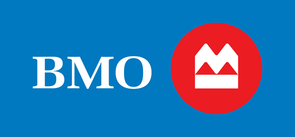

<div class="about">
    <div class ="section">
        <div class = "text-center header">
            About Me
        </div>
        <div>
            <div class= "med-text text-color-grey pb-3">
                Hi, My name is <a class="text-color-main link" routerLink="">Sam Noguchi</a> and I'm a
                second year software engineering student at the 
                <a class="text-color-main link" href="https://uwaterloo.ca/future-students/programs/software-engineering" target="_blank">University of Waterloo</a>.
            </div>

            <div class= "med-text text-color-grey pb-3">
                 I love to build things! I'm most familiar working in C++, Python and
                 Java, however I love learning new technologies. 
            </div>

            <div class= "med-text text-color-grey pb-3">
                Check out my 
                <a class="text-color-main link" href="https://github.com/samuelnoguchi" target="_blank">github</a> 
                or 
                <a class="text-color-main link" routerLink="">projects section</a>
                    below to see some of my latest creations. 
           </div>

           <div class= "med-text text-color-grey pb-3">
                So far, I've done software engineering internships at:
                <div class="text-center p-3">
                         
                        
                </div>      
           </div>

           <div class= "med-text text-color-grey pb-3">
                As a coop student, I'm always looking for new and exciting opportunities. 
                Please, feel free to check out my <a class="text-color-main link" href="../../assets/Samuel-Noguchi-Resume.pdf" target="_blank">resume</a>.
           </div>
        </div>

        

    </div>
</div>
